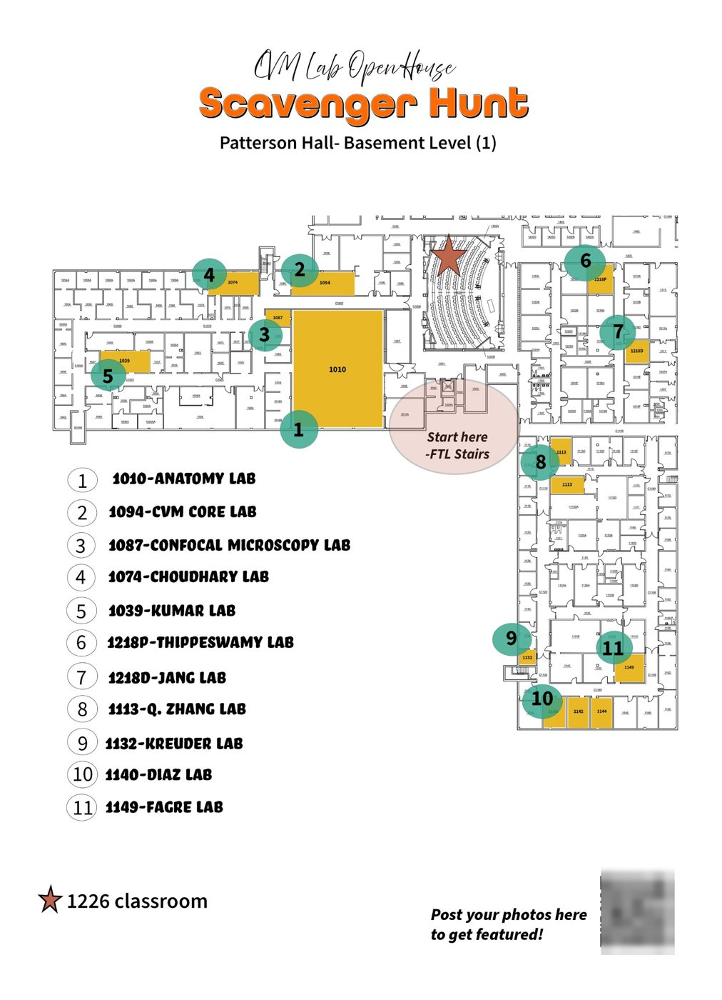
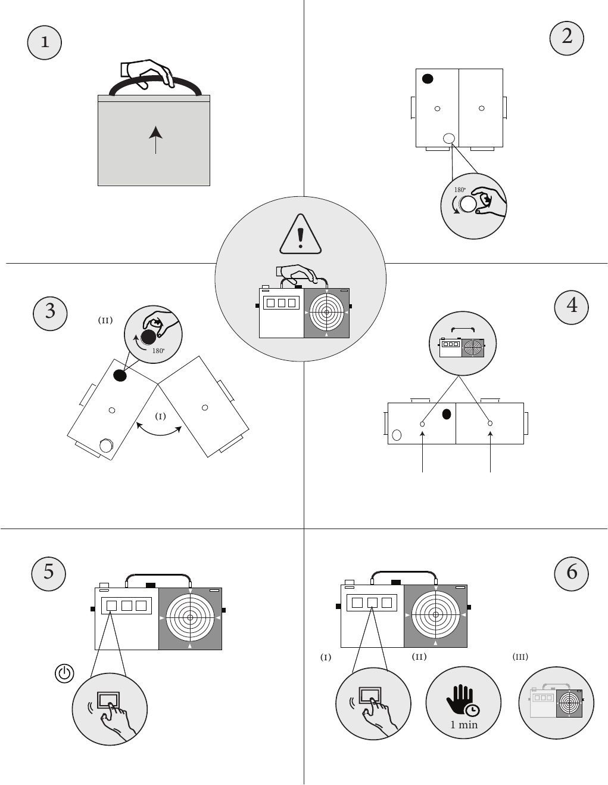
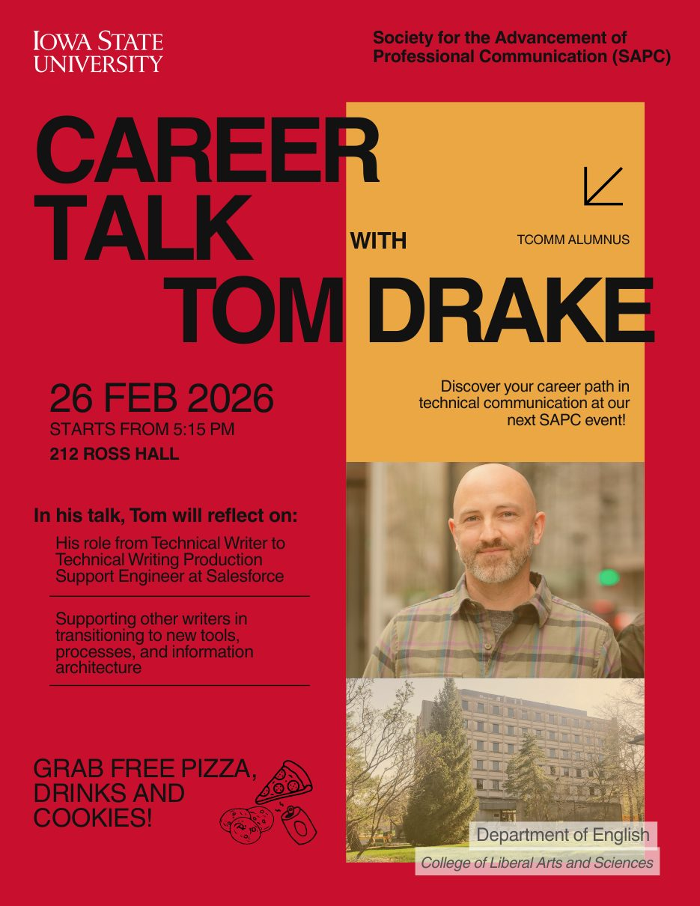
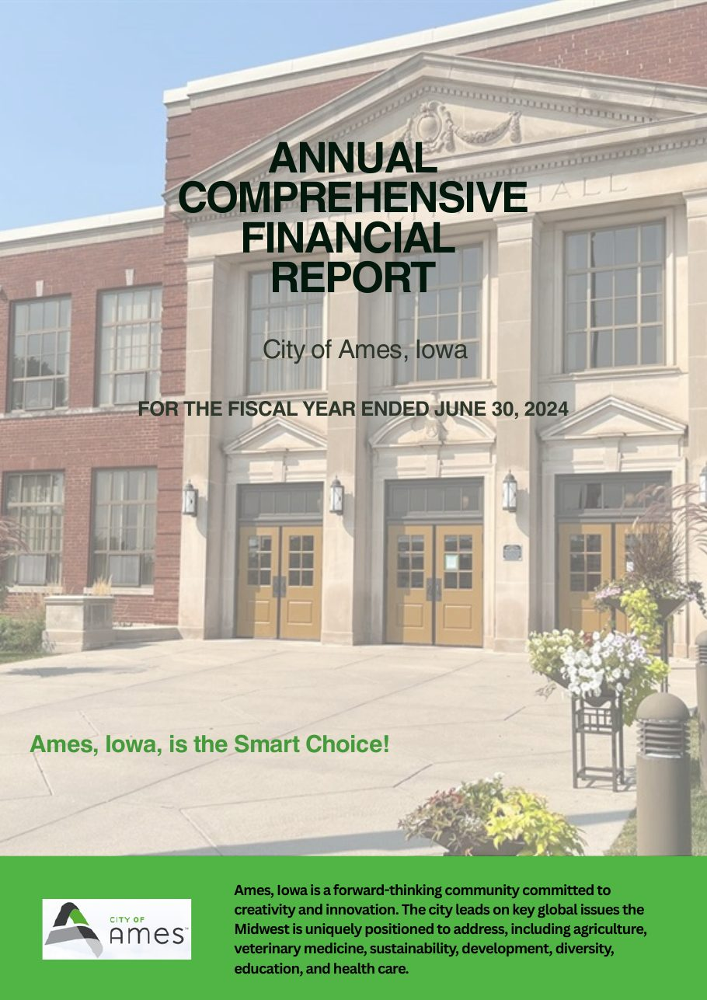
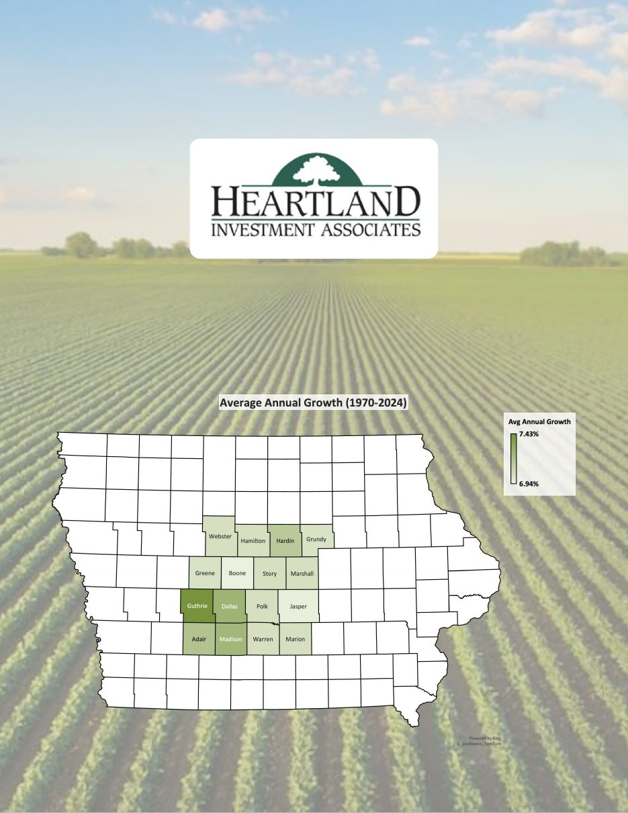
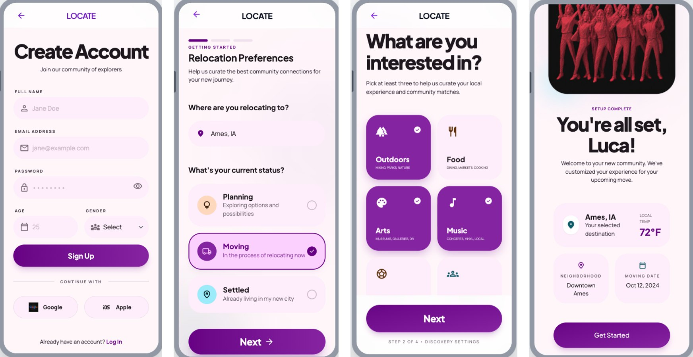

I design information for people, and for the AI systems they work with.
I'm a second-year PhD student in Rhetoric and Professional Communication at Iowa State University. I study how people build context and convey intent to AI at work, and I design documents, maps and websites that help people find what they need.
Information design
Documents, data and maps for human readers: deciding what people need to see first and giving everything else a clear place.

Wayfinding maps for a lab open house
Turned architectural floor plans into visitor maps for a self-guided tour of research labs, starting with a walk through the building.

A wordless instruction manual
Technical drawings redesigned into a 12-step guide that works without words.

Career talk flyers for SAPC
Two flyers in Iowa State's colors, built as a series.

Redesigning the City of Ames annual report
Two redesigns of a 175-page financial report, with two different ways to make the financial tables readable.

Iowa farmland values: a data display
A four-page data story on 54 years of land values across 16 counties, with a takeaway above every chart.

From plain text to a conference schedule
A plain text file turned into a two-page program that attendees can scan by day and time.
UX & human–AI research
How people find, use and communicate with information and AI, studied through interviews, user studies and audits, and applied to real sites.

LOCATE: one app for settling into a new city
From personas and paper prototypes to a high-fidelity app tested with users against Meetup and Reddit.
Website recovery audit for the Village of Potsdam
A content inventory, a comparison of AI and OCR text extraction, and a recovery plan for a municipal site.
Content strategy for the ISU Foundation Relations site
Shaped an open-ended request into a site map and a SharePoint site for faculty seeking foundation funding.
Hexcrete research website
Moved a research site into Iowa State's web template, editing the text, choosing better images and reorganizing pages.
Documentation sites on GitHub
A documentation site with articles on writing with AI, and a beginner's guide to publishing a first website.
Context engineering research
Three working papers on how professionals give AI systems the context they need, and what happens to meaning along the way.
How professionals build context for AI
Interviews with 12 communication experts across industries on how they build context and convey intent to AI tools at work.
Working paperAudience adaptation and safety fidelity in AI instructions
A controlled comparison of Claude and ChatGPT rewriting two FDA-authorized instruction sets for five audiences, 100 outputs scored with a safety-fidelity checklist.
Working paperSKILL.md files as information architecture for AI agents
An analysis of 40 public agent skill files: the document-design rules they give AI agents, how they organize information, and whether those rules rest on research or convention.
Working paper
Publications
Peer-reviewed work in design of communication and applied linguistics. Full list on Google Scholar.
- 2026
Color as corporate communication: Use of color in digital CSR and ESG reports across industries
Halepoto, B. In Proceedings of the 44th ACM International Conference on Design of Communication, pp. 20–29. ACM.
Presented at SIGDOC 2026
- 2024
Determinants of English language anxiety with respect to educational background among undergraduate university students: A comparative study
With N. Rahman and co-authors. Migration Letters, 21(S14), 129–146.
- 2022
A review of communication strategies employed by Asian English speakers
Halepoto, B., Fatima, S., and Bint-e-Javaid, S. Pakistan Journal of Educational Research.
About
I came to design through language. After degrees in linguistics and applied linguistics, I taught business communication and worked as a freelance research and proposal writer before starting my PhD at Iowa State in 2025.
My work sits where writing, design and research meet. I am working on how humans build context and convey intent to AI systems, and on how to design information that machines can read and understand. Looking ahead, I see my work moving toward research on AI behavior.
At the Iowa State University Foundation, I help staff bring AI tools into their everyday work while they keep the final say, and I plan and write the guides they use.
- Education
- PhD, Rhetoric and Professional Communication, Iowa State University (in progress)
M.S., Applied Linguistics, NED University of Engineering and Technology
B.S., Linguistics, University of Sindh - Research methods
- Expert interviews, user studies, controlled comparisons, qualitative coding, inter-rater reliability, significance testing
- Tools
- Adobe Photoshop and Illustrator, Canva, Claude, Claude Design, SharePoint, WordPress, Quarto, Markdown, GitHub, SPSS, AntConc
- Languages
- English, Urdu, Sindhi